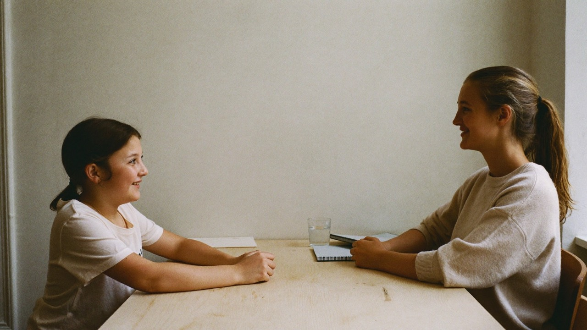

From enquiry to
the first session.
You do not browse a catalogue. We go through the need with you and then choose the tutor who suits the student best.

How it works.
You take the first step. We handle the rest — you never have to search, compare or negotiate.
-
01
Enquiry
Tell us what the student needs help with, which year group and which subjects. It takes about two minutes.
-
02
We get in touch within 24 hours
We go through the need together with you before any matching is done.
-
03
Matching
We select the tutor who suits the student best — based on subject, level, need and personality.
-
04
Study plan and booking
We draw up an individual study plan and you book your sessions.
-
05
Follow-up
After each session you get a report and access to extra digital exercises.
You set the pace.
One, two or three hours
Sessions are whole hours — one, two or three. You suggest the day, time and length, and the tutor accepts it or suggests another. The length can differ from one session to the next.
Move it when needed
Both you and the tutor can move a session, and the other party sees the change immediately.
Cancel in time
A session that is not paid yet you cancel yourselves; a paid session we cancel for you and refund. Cancel at least 12 hours before: if you cancel later, you pay half the session, or half the time is taken from your hours.
- You suggest a time
- The tutor confirms
- You pay
- You move the session
Safety at every step.
This is not admin for its own sake. Each part exists because someone would otherwise have had to trust a promise.
Interviewed and trained
Everyone has been interviewed, taken our training and passed a test before they are visible to a family.
Secure payment
Payment goes through Nextrum, by card or Klarna as soon as the tutor has confirmed the time, and if the session is shorter than booked we refund the difference. Booking, payment and session all connect, so what took place is always visible.
Safe communication
Communication happens through the platform, so there is a record of what was said and booked.
Quality assurance
We follow up on sessions and collect feedback.
Ready to take the next step?
For those who want to learn more. For those who want to help others.
- No minimum term
- Costs nothing to ask